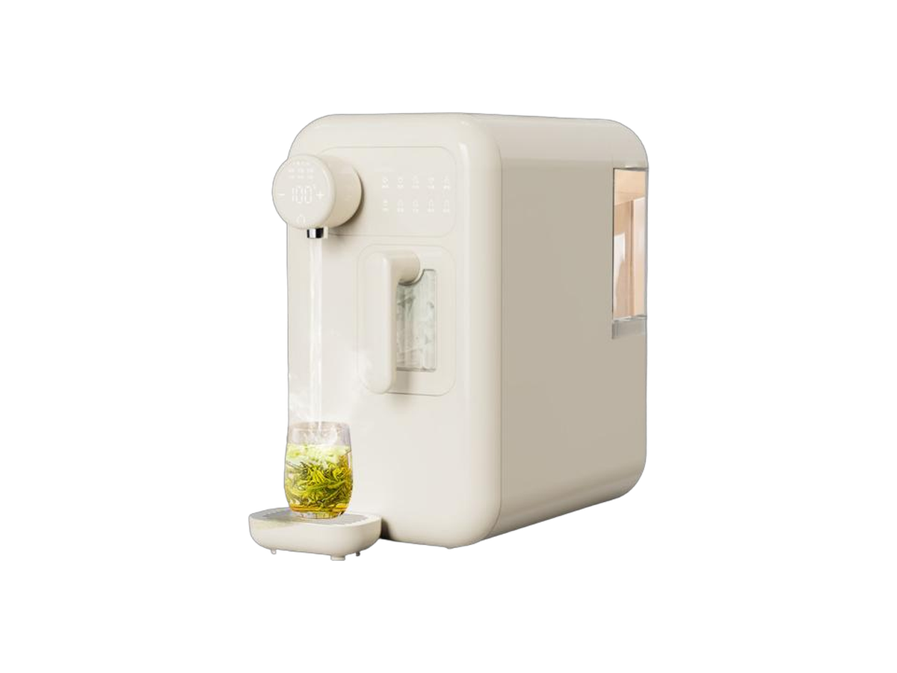
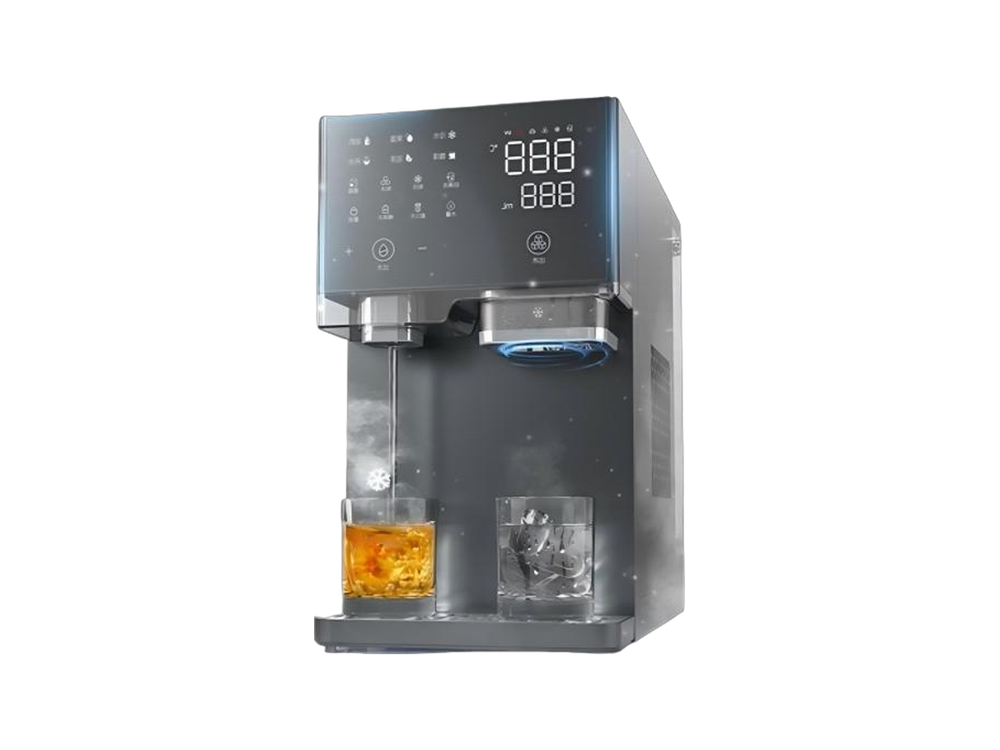
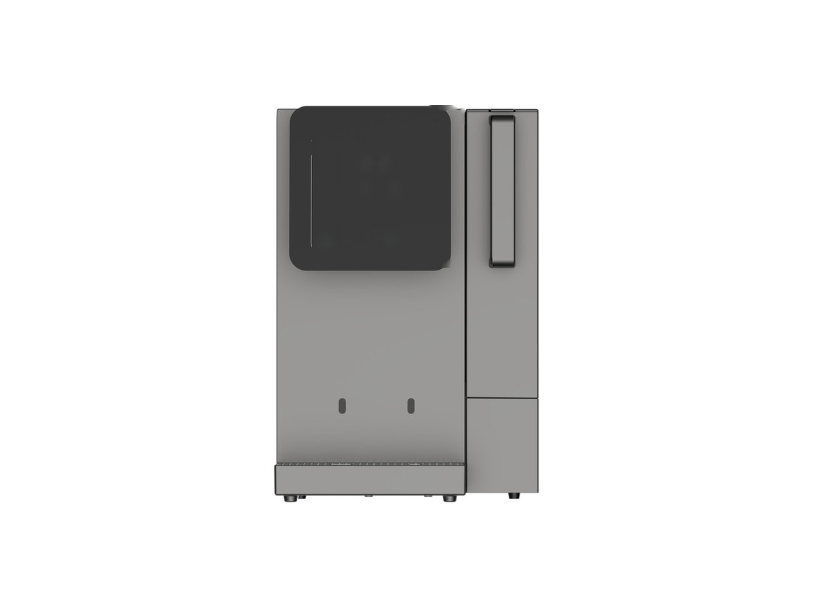

台式净水器
台式净水器RP-C07
带加热壶的 RO 净水器
SKU: RP-C07
起订量：询价时确认

台式净水系统
制冰冷热水 RO 净水器 (M2401RNI)
RP-C09 — 制冰冷热水 RO 净水器. 关键规格： RO 产水量 50 / 75 / 100 GPD. 规格按型号及订单确认。本系列另有五款制冰变体，见下方。
电压／频率可按目标国家配置，其他配置按订单确认。
将鼠标悬停在款式图片上查看对应参数。触屏设备请点按图片。



各变体的完整参数并排对比。下方的规格表为 RP-C09 的参数。
| 规格 | RP-C09-1 — 制冰冷热水 (M2401RNI) | RP-C09-2 — 制冰变体 A，米黄款 (AM2512HI) | RP-C09-3 — 制冰变体 B，灰色双出水口款 (AM2513HI) | RP-C09-4 — 制冰变体 C，前置显示屏款 (W90) | RP-C09-5 — 制冰变体 D (W91) | RP-C09-6 — 制冰变体 E (W100) |
|---|---|---|---|---|---|---|
| RO 产水量 | 50 / 75 / 100 GPD | 按订单确认 | 按订单确认 | 100 GPD | 按订单确认 | 按订单确认 |
| RO 产水流量 | ≥0.13 / ≥0.19 / ≥0.26 L/min | 按订单确认 | 按订单确认 | 0.26 L/min | 按订单确认 | 按订单确认 |
| 制冰能力 | ≥6 kg / 24 h（220 V 为 8 kg；110 V 大于 6 kg） | 8 分钟 / 49 颗每轮 | 6 分钟每轮 | 约 8–10 分钟每轮；每轮 9 颗 | 按订单确认 | 按订单确认 |
| 储冰量 | 按订单确认 | 49 颗 | 按订单确认 | 500 g | 按订单确认 | 按订单确认 |
| 额定功率 | 2180 W | 2150 W | 2200 W | 2200 W（制热 2000 W） | 按订单确认 | 按订单确认 |
| 制冷水能力 | 按订单确认 | 冷水 >6°C / 1.2 L/h | 冷水 >6°C / 1.2 L/h | 2.5 L/h（≤10°C） | 按订单确认 | 按订单确认 |
| 制热水能力 | 按订单确认 | 热水 >90°C / 24 L/h | 热水 >90°C / 24 L/h | 按订单确认 | 按订单确认 | 按订单确认 |
| 原水箱 | 按订单确认 | 2.6 L | 4 L | 按订单确认 | 按订单确认 | 按订单确认 |
| 尺寸 (L×W×H) | 235 × 457 × 455 mm | 228 × 448 × 402 mm | 228 × 435 × 399 mm | 415 × 305 × 455 mm | 按订单确认 | 按订单确认 |
| 额定净水量 | 2000 L | 按订单确认 | 按订单确认 | 4000 L | 按订单确认 | 按订单确认 |
| 过滤方式 | PP + CTO + PP + RO + C | 按订单确认 | 按订单确认 | PCC + RO | 按订单确认 | 按订单确认 |
| 颜色 | 按订单确认 | 复古米黄 | 磨砂灰 | 灰色 | 按订单确认 | 按订单确认 |
| 电压／频率 | Configurable to target country | 220 V / 50 Hz | 220 V / 50 Hz | 220–240 V，50–60 Hz | 按订单确认 | 按订单确认 |
制冰能力按原厂口径引用：RP-C09 按每天公斤数（kg / 24 h），各变体按每轮分钟数／颗数，两种口径不能直接比较快慢。变体 A、B 的目录参数表中未列 RO 产水量、过滤方式与额定净水量，按订单确认。变体 D、E 属于目录中列名的台式压缩机制冰块系列，但目录未给出两款各自的图片与参数，须等工厂确认，暂按订单确认。
制冰产品视频。
ROPureOEM 目录中的 9 行规格。
| RO 产水量 | 50 / 75 / 100 GPD |
|---|---|
| RO 产水流量 | ≥0.13 / ≥0.19 / ≥0.26 L/min |
| 制冰能力 | ≥6 kg / 24 h（220 V 为 8 kg；110 V 大于 6 kg） |
| 额定功率 | 2180 W |
| 尺寸 | 235 × 457 × 455 mm |
| 额定净水量 | 2000 L |
| 过滤方式 | PP + CTO + PP + RO + C |
| 电压／频率 | Configurable to target country |
| 其他配置 | 按订单确认（Confirmed per order） |
规格来源于 ROPureOEM 目录。尚未确认的数值标注为“按订单确认（Confirmed per order）”，不发布未经确认的参数。